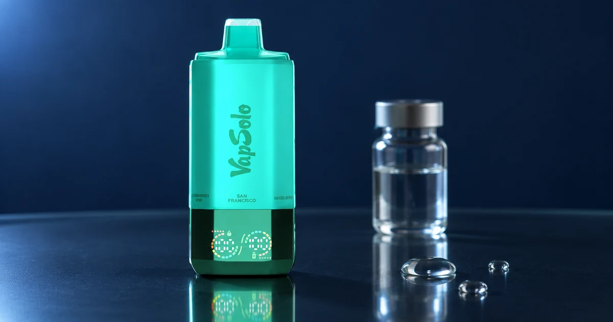

Qué es el líquido vaper o electronic liquid
Líquido vaper, e-líquido y electronic liquid son formas de referirse al líquido empleado en dispositivos concebidos para ello. No son sinónimos de batería, pod ni de un vaper desechable.

E-líquido y electronic liquid: la misma categoría
“E-líquido” es la adaptación habitual de e-liquid en español; “electronic liquid” puede aparecer en búsquedas o descripciones en inglés. Los tres términos hablan del líquido, no del dispositivo. La composición, la concentración y las advertencias deben consultarse en la etiqueta y la información oficial de cada producto.
Qué significa “líquido vaper con nicotina”
Indica que el líquido contiene nicotina. La nicotina es una sustancia adictiva y el producto está destinado exclusivamente a adultos. No debe tratarse como un detalle secundario: revisa siempre la concentración, las advertencias y la normativa aplicable antes de adquirir o usar cualquier producto.
| Término | Se refiere a | No debe confundirse con |
|---|---|---|
| Líquido vaper | El líquido de un sistema compatible | La batería |
| E-líquido / electronic liquid | La misma categoría en distintas lenguas | Un pod por definición |
| Líquido con nicotina | Un líquido que contiene nicotina | Una recomendación de uso |
Antes de rellenar, confirma la compatibilidad
No todos los dispositivos admiten líquido
La presencia de una batería recargable no convierte automáticamente un formato en rellenable. Solo debe añadirse líquido cuando el fabricante lo autorice y explique el procedimiento. Consulta la diferencia entre recargable y rellenable antes de asumir esa función.
Conclusión
Los nombres líquido vaper, e-líquido y electronic liquid se refieren al líquido; no describen el tipo de dispositivo. La etiqueta, la compatibilidad y las advertencias son la referencia correcta para cualquier decisión.